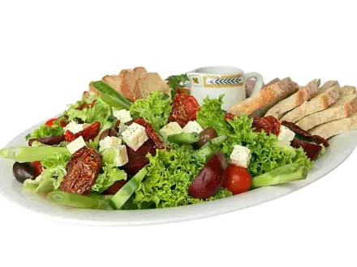
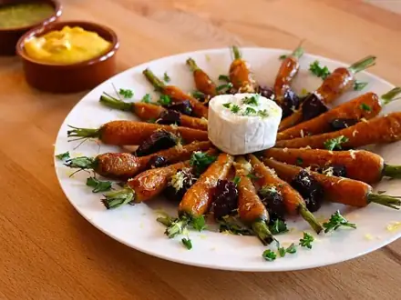
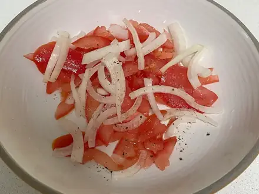
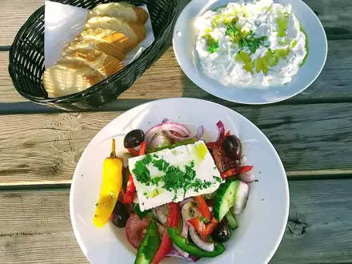
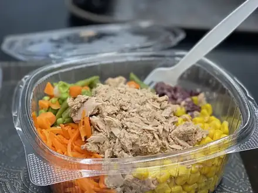
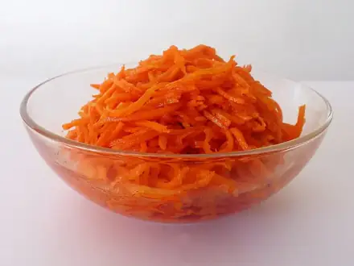
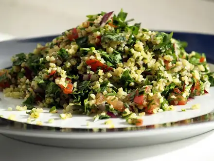
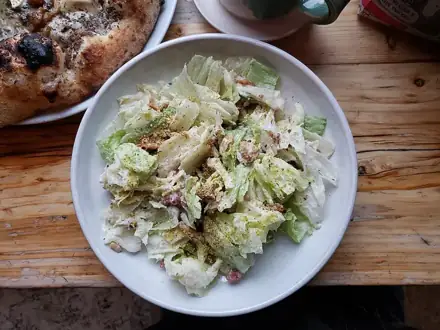
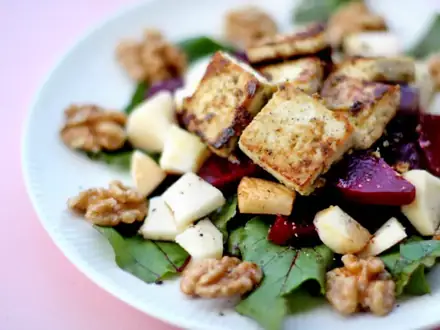
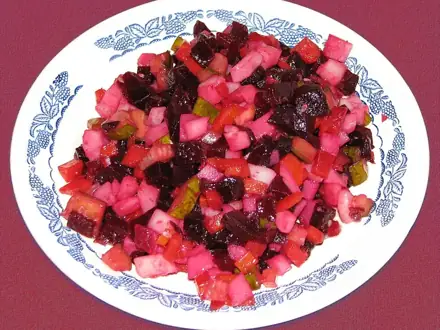

Простые салаты
Салаты на каждый день и на праздник. 16 рецептов: у каждого время, калории и БЖУ на порцию, пошаговые инструкции и список покупок

Салат из свежих овощей10 мин · 130 ккал · Б 2 г · Салат
Морковь с чесноком и сыром10 мин · 279 ккал · Б 11 г · Салат
Ачичук10 мин · 41 ккал · Б 2 г · Салат
Греческий салат15 мин · 353 ккал · Б 12 г · Салат
Салат с тунцом и фасолью15 мин · 220 ккал · Б 21 г · Салат Салат с тунцом и яйцом20 мин · 258 ккал · Б 23 г · Салат
Салат с тунцом и яйцом20 мин · 258 ккал · Б 23 г · Салат
Морковь по-корейски20 мин · 136 ккал · Б 1 г · Салат Салат из курицы из супа25 мин · 369 ккал · Б 31 г · Салат
Салат из курицы из супа25 мин · 369 ккал · Б 31 г · Салат
Табуле30 мин · 204 ккал · Б 4 г · Салат Крабовый салат35 мин · 345 ккал · Б 12 г · Салат
Крабовый салат35 мин · 345 ккал · Б 12 г · Салат
Цезарь с курицей40 мин · 626 ккал · Б 45 г · Салат Оливье60 мин · 494 ккал · Б 16 г · Салат
Оливье60 мин · 494 ккал · Б 16 г · Салат Салат Мимоза с сардинами60 мин · 455 ккал · Б 21 г · Салат
Салат Мимоза с сардинами60 мин · 455 ккал · Б 21 г · Салат
Свёкла с чесноком и орехами70 мин · 238 ккал · Б 4 г · Салат
Винегрет75 мин · 178 ккал · Б 4 г · Салат Селёдка под шубой100 мин · 437 ккал · Б 16 г · Салат
Селёдка под шубой100 мин · 437 ккал · Б 16 г · Салат
Другие подборки
- Что приготовить из курицы
- Что приготовить из фарша
- Что приготовить из мяса
- Что приготовить из рыбы
- Что приготовить из картошки
- Что приготовить из яиц
- Что приготовить из творога
- Что приготовить из кабачков
- Что приготовить из капусты
- Что приготовить из грибов
- Что приготовить из риса
- Что приготовить из макарон
- Что приготовить из гречки
- Быстрый ужин за 30 минут
- Быстрый завтрак за 20 минут
- Что приготовить на скорую руку
- ПП-рецепты: лёгкие блюда до 400 ккал
- Белковые блюда: от 25 г белка на порцию
- Дешёвые рецепты из простых продуктов
- Что приготовить ребёнку
- Постные блюда
- Блюда на пару
- Что приготовить в духовке
- Простые супы
- Выпечка и десерты
- Блюда на праздничный стол
- Что приготовить из остатков